무선설비기사 (2015-06-06 기출문제)
1과목: 디지털 전자회로
1. 무부하시의 직류출력전압이 12[V]인 정류회로의 전압 변동률이 10[%]일 경우 전부하시의 단자전압은 약 얼마인가?
- 9.9[V]
- 10.9[V]
- 11.9[V]
- 12.9[V]
(정답률: 88%)

2. 다음 중 정류회로에 대한 설명으로 틀린 것은?
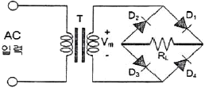
- (+) 반주기에는 D1과 D3가 On되어 정류작용을 한다.
- 고압 정류회로에 적합하다.
- Tap형 전파정류회로에 비해 정류효율이 낮고 전압 변동률이 크다.
- 중간 Tap이 있어 소형 변압기로 사용할 수 있다.
(정답률: 79%)
3. 이상적인 차동증폭기의 동상제거비(CMRR)는?
- 0
- 1
- -1
- ∞
(정답률: 77%)
4. 다음 중 드레인 접지형 FET 증폭기에 대한 특성으로 틀린 것은? (단, FET의 파라미터 Am은 상호 전도도이다.)
- 입력 임피던스는 매우 크다.
- 전압 이득은 약 1이다.
- 출력은 입력과 역위상이다.
- 출력 임피던스는 약 1/Am이다.
(정답률: 81%)
5. 다음 주어진 회로에서 점선으로 표시된 회로의 기능이 아닌 것은?
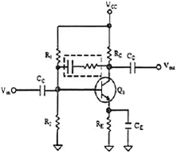
- 증폭 이득을 조절할 수 있다.
- 입출력 임피던스를 조절할 수 있다.
- 대역폭을 조절할 수 있다.
- 온도 특성을 조절할 수 있다.
(정답률: 85%)
6. 이득이 100인 저주파 증폭기가 10[%]의 왜율을 가질 경우, 왜율을 1[%]로 개선하기 위해서는 얼마의 전압 부궤환을 걸어 주어야 하는가?
- 0.01
- 0.09
- 99
- 100
(정답률: 75%)
7. 다음 중 주파수변조(FM)에서 신호대 잡음비(S/N)를 개선하기 위한 방법이 아닌 것은?
- 디엠파시스(De-Emphasis) 회로를 사용한다.
- 주파수대역폭을 넓게 한다.
- 변조지수를 크게 한다.
- 증폭도를 크게 높인다.
(정답률: 62%)
8. DPSK 복조에 주로 이용되는 검파방식은?
- 포락선 검파
- 동기 검파
- 동기직교 검파
- 차동위상 검파
(정답률: 73%)
9. 다음 회로는 어떤 발진회로인가?
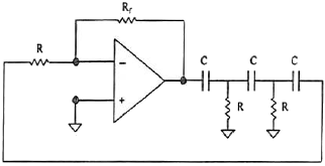
- 윈-브리지 발진회로
- 위상천이 발진회로
- 클랩 발진회로
- 피어스 발진회로
(정답률: 74%)
10. 다음 중 발진에 대한 설명으로 틀린 것은?
- 발진회로는 전기적인 에너지를 받아서 지속적인 전기적 진동을 일으킨다.
- 발진이 지속되려면 출력신호의 일부를 정궤환시켜야 한다.
- 외부로부터 일정한 입력신호를 제공해주어야 발진과정을 지속할 수 있다.
- 발진회로는 정현파 발생회로와 비정현파 발생회로가 있다.
(정답률: 73%)
11. 다음 중 그림과 같은 회로에 대한 설명으로 옳은 것은?
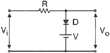
- 입력 파형의 아랫부분을 잘라내는 베이스 클리퍼 회로이다.
- 입력 파형의 윗부분을 잘라내는 피크 클리퍼 회로이다.
- 직렬형 베이스 클리퍼 회로이다.
- 입력 파형의 위, 아래 부분을 일정하게 잘라내는 클리퍼 회로이다.
(정답률: 86%)
12. 다음 중 멀티바이브레이터의 특징으로 옳은 것은?
- 고차의 고조파를 포함하고 있다.
- 부성 저항을 이용한 발진기이다.
- 발진 출력이 크다.
- 극초단파의 발생에 적합하다.
(정답률: 69%)
13. 논리식 Y=ABC+ABC+ABC+BC를 간단히 하면?
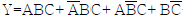
- AB+C
- AC+B
- ABC
- A+BC
(정답률: 75%)
14. 다음 중 0에서 9까지의 십진수를 표현하는데 사용되는 2진수 체계는?
- ASCII 코드
- 그레이 코드
- 해밍 코드
- BCD 코드
(정답률: 86%)
15. 다음 중 전가산기(Full Adder)에 대한 설명으로 옳은 것은?
- 아랫자리의 자리올림을 더하여 그 자리 2진수의 덧셈을 완전하게 하는 회로이다.
- 아랫자리의 자리올림을 더하여 홀수의 덧셈을 하는 회로이다.
- 아랫자리의 자리올림을 더하여 짝수의 덧셈을 하는 회로이다.
- 자리올림을 무시하고 일반계산과 같이 덧셈을 하는 회로이다.
(정답률: 87%)
16. 다음 회로가 수행할 수 있는 논리 기능은?
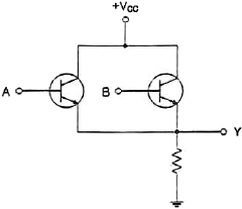
- NOT
- OR
- AND
- XOR
(정답률: 85%)
17. 다음 진리표를 부울 대수식으로 표시하면?
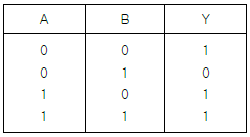
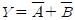
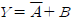
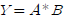
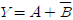
(정답률: 80%)
18. 다음 그림과 같이 2n개(0~7)의 십진수 입력을 넣었을 때 출력이 2진수(000~111)로 나오는 회로의 명칭은?
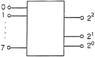
- 디코더(Decoder) 회로
- A-D 변환회로
- D-A 변환회로
- 인코더(Encoder) 회로
(정답률: 82%)
19. 30:1의 리플계수기를 설계할 때 최소로 필요한 플립플롭의 수는?
- 4
- 5
- 6
- 8
(정답률: 89%)
20. 다음 중 동기식 3진 카운터에 대한 설명으로 틀린 것은?
- 병렬 카운터라고도 한다.
- 각 단에 클럭펄스가 인가되는 회로이다.
- 동시에 Trigger 입력이 인가되기 때문에 여러 단이 동시에 동작되므로 고속으로 동작되는 회로에 많이 이용된다.
- 전단의 출력이 Trigger 입력으로 들어온다.
(정답률: 72%)
2과목: 무선통신 기기
21. AM(Amplitude Modulation)에서 반송파 전압이 10[V], 변조도가 80[%]일 때 상측파대 전압은 몇 [V]인가?
- 2[V]
- 4[V]
- 6[V]
- 8[V]
(정답률: 66%)
22. 다음 중 마이크로웨이브 통신이나 밀리미터파를 사용하는 다중 통신에 사용되는 중계방식이 아닌 것은?
- 검파 중계 방식
- 재생 중계 방식
- 무급전 중계 방식
- 반파 중계 방식
(정답률: 51%)
23. 다음 중 GPS에 대한 설명으로 틀린 것은?
- 여러 개의 위성으로부터 시간 정보를 받는다.
- GPS 수신기는 위성의 거리에 대한 데이터를 받는다.
- 삼각 측량법에 의해 자신의 위치를 계산하는 원리이다.
- GPS 서비스는 다수의 위성 중 4개 이상의 위성으로부터 정보를 받는다.
(정답률: 77%)
24. 다음 중 레이더 기술에 대한 설명으로 틀린 것은?
- 야간이나 시계가 불량한 경우 레이더를 사용하면 안전한 항해를 할 수 있다.
- 거리와 방위를 구할 수 있으므로 목표물의 위치 및 상대속도 등을 구할 수 있다.
- 특수레이더의 경우 강렬한 열대성 폭풍(태풍)의 위치와 강우의 이동 등 다양한 용도로 사용할 수 있다.
- 기상조건에 영향을 많이 받으므로 주로 가시거리 내에서 사용된다.
(정답률: 91%)
25. 채널간 간섭 등 위상 변화에 의한 문제들을 해결하기 위해 QPSK의 위상을 연속적으로 변하도록 하는 변조방식은?
- BPSK
- PSK
- MPSK
- MSK
(정답률: 72%)
26. 다음 중 거리측정장치(DME)에 대한 설명으로 틀린 것은?
- 지상국 안테나는 무지향성 안테나를 사용한다.
- DME 동작원리는 전파의 전파속도를 이용한 것이다.
- DME는 보통 VOR 또는 ILS와 함께 설치한다.
- 지상 DME국은 질문신호를 송신하고 항공기는 응답신호를 송신한다.
(정답률: 86%)
27. 다음 그림은 어떤 변조방식의 블록도를 나타내는가? (단, 그림에서 m(t)는 입력정보이고, fc는 방송주파수이다.)
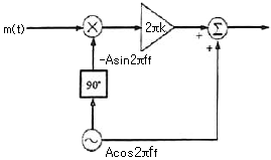
- 협대역 각변조(Narror Band PM)
- 협대역 주파수변조(Narrow Band FM)
- DSB-TC
- VSB
(정답률: 67%)
28. 다음 중 ASK와 FSK 방식에 대한 비교 설명으로 틀린 것은?
- 동기식 정합필터 수신기의 성능은 동일하다.
- 고정된 SNR 환경에서 비동기식 수신기의 성능은 근사적으로 동일하다.
- 비트 판정을 위한 최적 문턱값은 FSK 방식의 경우 고정되고, ASK 방식의 경우 SNR에 따라 변한다.
- 진폭의 반으로 문턱값을 설정한 비동기식 ASK 방식 복조의 경우 1을 0으로 판정하는 오류확률과 0을 1로 판정하는 오류확률이 동일하다.
(정답률: 70%)
29. 다음 중 VSB 변조에 대한 설명으로 틀린 것은?
- 양 측파대 중 원하지 않는 측파대를 완전히 제거하지 않고 그 일부를 잔류시켜 원하는 측파대와 함께 전송한다.
- VSB 변조는 SSB 변조에 비해 25~33[%] 정도의 대역폭을 넓게 사용하지만 간단히 만들 수 있다.
- 원하지 않는 측파대를 완벽히 제거하지 않아야 하므로 필터 설계조건이 까다롭다.
- DSB 변조와 SSB 변조를 절충한 방식으로 텔레비전 방송에 사용되고 있다.
(정답률: 68%)
30. 다음 중 QAM 변조의 특징에 대한 설명으로 틀린 것은?
- QAM 신호를 2개의 직교성 DSB-SC 신호를 선형적으로 합성한 것으로 볼 수 있다.
- M진 QAM의 대역폭 효율은 M진 PSK의 대역폭 효율과 동일하다.
- QAM은 비동기 검파 또는 비동기 직교 검파방식을 사용하여 신호를 검출한다.
- QAM은 APK 변조방식으로 잡음과 위상변화에 우수한 특성을 가진다.
(정답률: 59%)
31. 다음 중 UPS의 구성요소가 아닌 것은?
- 증폭부
- 정류부
- 인버터부
- 축전지
(정답률: 80%)
32. 다음 중 단상 반파 정류회로에 대한 설명으로 잘못된 것은?
- 단상 반파 정류회로의 최대 역전압은 2[Vm]이다. (단, Vm은 교류전압의 최대치이다.)
- 단상 반파 정류회로의 맥동 주파수는 전원주파수 f이다.
- 단상 반파 정류회로의 맥동률은 121[%]이다.
- 단상 반파 정류회로의 최대 정류효율은 40.6[%]이다.
(정답률: 65%)
33. 다음 중 납 축전지의 용량이 감소하는 원인이 아닌 것은?
- 전해액 비중 과소
- 극판의 만곡 및 균열
- 충방전 전류의 과다
- 백색 황산연의 제거
(정답률: 87%)
34. 다음 중 전력변환장치가 아닌 것은? (문제 오류로 실제 시험에서는 모두 정답처리 되었습니다. 여기서는 1번을 누르면 정답 처리 됩니다.)
- 인버터(Inverter)
- 컨버터(Converter)
- 정류기(Rectifier)
- 무정전전원공급장치(UPS)
(정답률: 85%)
35. 측정물의 작용에 의하여 계측기의 지침이 변위를 일으켜, 이 변위를 눈금과 비교하여 측정치를 얻는 측정방식은 무엇인가?
- 편위법
- 영위법
- 보정법
- 치환법
(정답률: 83%)
36. 축전지 극판에 백색 황산연이 생겼을 때 실시하는 충전방식으로 옳은 것은?
- 초충전
- 속충전
- 부동충전
- 과충전
(정답률: 85%)
37. 어떤 동축 케이블의 종단 개방시 입력 임피던스가 30[Ω]이고 종단 단락시 입력 임피던스가 187.5[Ω]일 때 이 동축 케이블의 특성 임피던스는 몇 [Ω]인가?
- 50[Ω]
- 65[Ω]
- 75[Ω]
- 80[Ω]
(정답률: 88%)
38. 다음 중 전원장치에 사용되는 평활회로에 대한 설명으로 옳지 않은 것은?
- 일종의 저역통과 필터이다.
- 콘덴서 입력형과 초크 입력형이 있다.
- 맥동률을 줄이기 위해서는 콘덴서나 초크코일의 값을 크게 한다.
- 초크 입력형의 맥동률은 부하저항이 클수록 좋다.
(정답률: 70%)
39. 실효높이가 10[m]인 안테나에 0.08[V]의 전압이 수신되었을 때 이 지점의 전계강도는 약 몇 [dB]인가? (단, 1[μV/m]를 0[dB]로 한다.)
- 78[dB]
- 88[dB]
- 98[dB]
- 108[dB]
(정답률: 72%)
40. AM 송신기의 신호대 잡음비 측정에 필요하지 않는 것은?
- 저주파 발진기
- 감쇠기
- 전력계
- 직선 검파기
(정답률: 74%)
3과목: 안테나 공학
41. 전파의 속도는 매질의 어떤 양에 따라 변화하는가?
- 점도와 밀도
- 밀도와 도전율
- 도전율과 유전율
- 유전율과 투자율
(정답률: 84%)
42. 다음 중 전파의 성질에 대한 설명으로 옳지 않은 것은?
- 송신측에서 수직 다이폴을 사용하면 수신측에서도 수직편파 안테나를 사용하여야 한다.
- Snell의 법칙은 매질의 경계면에서 일어나는 회절현상을 분석할 때 사용한다.
- 도체에 전파가 진입할 때의 감쇠되는 정도는 표피작용의 깊이(Skin Depth)로 알 수 있다.
- 주파수가 높을수록 직진성이 강하고 낮을수록 회절이 잘 된다.
(정답률: 76%)
43. 간격 d인 두 개의 평행 전극판 사이에 유전율
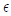
의 유전체가 있을 때, 전극 사이에 전압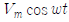
를 가한 경우의 변위 전류밀도는?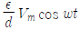
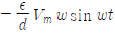
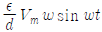
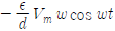
(정답률: 85%)
44. 그림과 같이 도선의 길이가 λ/4인 선단을 단락 할 경우 ab점에서 본 임피던스는? (단, I는 전류의 파장이다.)
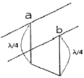
- 0
- 유도성
- 용량성
- ∞
(정답률: 83%)
45. 다음 중 도파관이 마이크로파 전송로로서 갖는 특징에 대한 설명으로 틀린 것은?
- 방사 손실이 없다.
- 유전체 손실이 적다.
- 저역 통과 여파기로서 작용을 한다.
- 표피작용에 의한 도체의 저항손실이 매우 적다.
(정답률: 77%)
46. 특성 임피던스가 Z0인 선로에 부하 임피던스가 ZL이 연결되었을 때 부하단에서 1/4 떨어진 선로상의 점에서 부하를 바라본 임피던스는?
- ZL/Z0
- Z0/ZL
- Z02/ZL
- ZL2/Z0
(정답률: 70%)
47. 다음 중 비동조 급전선의 특징에 대한 설명으로 옳은 것은?
- 동조 급전선에 비해 전송효율이 나쁘다.
- 정합장치가 불필요하다.
- 급전선 상의 전송파는 정재파이다.
- 급전선의 길이와 파장은 관계가 없다.
(정답률: 59%)
48. 다음 중 동축 급전선의 특징으로 옳은 것은?
- SHF대역에서는 유전체 손실이 감소한다.
- TEM 모드의 전송이 가능하다.
- Stub에 의해 정합이 이루어진다.
- 평형형 급전선이다.
(정답률: 55%)
49. 다이폴의 길이가 λ/10이고, 손실저항이 10[Ω]인 안테나의 효율[%]은 약 얼마인가?
- 40[%]
- 50[%]
- 60[%]
- 70[%]
(정답률: 47%)
50. 다음 중 수직편파 수직면내 무지향성 안테나로서 이득이 좋아 이동통신 기지국용 안테나로 많이 사용하는 안테나는?
- Alford 안테나
- Dipole 안테나
- 환상 Slot 안테나
- Collinear Array 안테나
(정답률: 69%)
51. 다음 중 소형ㆍ경량으로 부엽이 적고 이득이 높아 선박용 레이더 안테나로 가장 적합한 것은?
- 헤리컬 안테나
- 슬롯 어레이 안테나
- 혼 리플렉터 안테나
- 전자나팔 안테나
(정답률: 81%)
52. 다음 중 브라운(Brown) 안테나의 특징에 대한 설명으로 틀린 것은?
- λ/4 수직접지 안테나와 등가이다.
- GP(Ground Plane) 안테나의 일종이다.
- 수평면내 지향성은 8자형 특성을 갖는다.
- VHF대 기지국용 안테나로 많이 사용한다.
(정답률: 74%)
53. Friis의 전달공식에서 송신기와 수신기 안테나 간의 거리가 2배 증가할수록 수신전력은 어떻게되는가?
- 2[dB]로 증가한다.
- 3[dB]로 증가한다.
- 4[dB]로 감소한다.
- 6[dB]로 감소한다.
(정답률: 72%)
54. 초단파 및 극초단파가 가시거리 이상까지 전파하는 원인에 해당되지 않는 것은?
- 산악회절 현상에 의한 원거리 전파
- 전리층 투과에 의한 원거리 전파
- 라디오 덕트에 의한 원거리 전파
- 스포라딕 E층에 의한 원거리 전파
(정답률: 67%)
55. 다음 로딩(Loading) 다이폴안테나에 대한 설명으로 괄호 안에 맞는 말을 순서대로 배열한 것은?
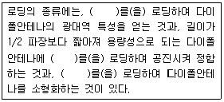
- 저항 - 인덕터 - 커패시터
- 인덕터 - 커패시터 - 저항
- 커패시터 - 저항 - 인덕터
- 커패시터 - 인덕터 - 저항
(정답률: 83%)
56. 다음 중 전파의 창(Radio window)의 범위를 결정하는 주요 요소에 해당하지 않는 것은?
- 전파 잡음의 영향
- 대류권의 영향
- 전리층의 영향
- 도플러 효과의 영향
(정답률: 71%)
57. 다음 중 임계 주파수에 대한 설명으로 틀린 것은?
- 전리층에 수직으로 입사하는 전자파의 반사와 투과의 경계가 되는 주파수이다.
- 전리층의 임계주파수를 알면 최대 전자밀도를 알 수 있다.
- 전리층의 전자밀도가 높아지면 임계 주파수는 낮아진다.
- 전리층의 굴절률이 0일 때의 주파수이다.
(정답률: 80%)
58. 다음 중 도약성 페이딩에 대한 설명으로 틀린 것은?
- 도약거리 부근에서 일어나는 페이딩이다.
- 일출, 일몰시 많이 발생한다.
- 전파가 전리층을 따라 반사하거나 투과함으로써 발생한다.
- 공간 다이버시티로 방지할 수 있다.
(정답률: 70%)
59. 다음 중 공전잡음에 대한 설명으로 틀린 것은?
- 장파보다 단파에서 영향이 더 심하다.
- 적도부근에서 많이 발생한다.
- 지향성 안테나를 사용하여 영향을 경감시킬 수 있다.
- 뇌방전에 의해 공전잡음이 발생한다.
(정답률: 69%)
60. 대지면을 완전 도체라고 가정하고, 송수신 안테나의 거리가 충분히 멀리 떨어져 있는 경우 수직 편파 송수신 안테나의 높이를 모두 2배로 증가시키면 수신 전계강도의 변화는?
- 변화가 없다.
- 1.14배 증가한다.
- 2배 증가한다.
- 4배 증가한다.
(정답률: 53%)
4과목: 무선통신 시스템
61. 다음 중 시분할 다원접속(TDMA) 방식의 장점이 아닌 것은?
- 듀플렉서가 필요없다.
- 상호변조가 줄어든다.
- 기지국 및 이동국을 소형화할 수 있다.
- 채널을 사용하지 않을 때는 신호를 송신하지 않는다.
(정답률: 70%)
62. DSSS(Direct Sequence Spread Spectrum) 시스템에서 한 비트에 코드 길이가 8인 PN 시퀀스를 곱해 스펙트럼을 확산시켰을 경우 수신 단에서의 처리 이득(Processing Gain)으로 가장 근사한 값은 얼마인가?
- 2[dB]
- 5[dB]
- 9[dB]
- 12[dB]
(정답률: 74%)
63. 음성 신호(최대 주파수는 3.3[kHz])를 표본화할 경우, 표본주파수가 fs=8[kHz]일 경우 보호대역은 얼마인가?
- 4.7[kHz]
- 3.3[kHz]
- 1.4[kHz]
- 0.7[kHz]
(정답률: 61%)
64. 다음 중 GPS의 정확도에 미치는 영향이 가장 큰요인은?
- 대류권
- 전리층
- 수신기 잡음
- 다중경로 페이딩 및 섀도잉 효과
(정답률: 68%)
65. 다음 중 정지 위성 통신 시스템의 특징이 아닌 것은?
- 고품질, 광대역 통신에 적합하다.
- 극 지방을 포함한 전세계 서비스 가능하다.
- 에러율이 작아 안정된 대용량 통신이 가능하다.
- 24시간 연속 통신이 가능하다.
(정답률: 81%)
66. 다음 위성 통신의 다원 접속 방식 중 CDMA 방식의 간섭 방지 방법으로 옳은 것은?
- Guard Band 할당
- Guard Time 할당
- 직교 Code 사용
- Guard Space 사용
(정답률: 81%)
67. 어떤 셀(Cell) 내의 통화량이 39.5[Erl], 1호당 평균점유시간은 100초일 때 이 Cell에 1시간당 발생하는 호(Call)의 수는 몇 호인가?
- 711[호/시간]
- 1,422[호/시간]
- 2,133[호/시간]
- 2,844[호/시간]
(정답률: 81%)
68. 다음 디지털변조방식 중 진폭과 위상을 모두 이용하여 변조하는 방식은?
- 8-PSK
- 16-QAM
- OQPSK
- ASK
(정답률: 87%)
69. 다음 LAN 전송방식 중 베이스밴드(Base Band) 방식의 특징에 해당되는 것은?
- 주파수분할다중화(FDM) 방식을 이용한다.
- 한 회선에 여러 개의 신호를 보낼 수 있다.
- 원래의 신호를 변조하지 않고 그대로 전송하는 방식이다.
- 통신경로를 여러 개의 주파수 대역으로 나누어 쓰는 방식이다.
(정답률: 79%)
70. 다음 중 OFDM(Orthogonal Frequency Division Multiplexing) 방식의 설명으로 틀린 것은?
- 다중 반송파 변조라고도 한다.
- 다중경로 환경에서 심볼간 간섭(ISI)의 영향에 약하다.
- 스펙트럼 이용 효율은 최대한 높일 수 있다.
- 다른 주파수에서 다수의 반송파 신호를 사용하여 각 채널상에 비트를 실어 보낸다.
(정답률: 76%)
71. 다음 중 CDMA 시스템의 기지국 용량 증대 방법으로 맞는 것은?
- 기지국의 다중 섹터화
- 기지국 안테나의 높이 조절
- 기지국 위치 변경
- 셀(Cell) 내의 중계기 추가 설치
(정답률: 61%)
72. 다음 중 HDLC(High Level Data Link Control) 프로토콜에 대한 설명으로 옳은 것은?
- 전달 계층의 정보 전달을 위한 프로토콜이다.
- 문자 방식의 프로토콜이다.
- Poing-To-Point 방식만 사용 가능하다.
- Go-Back-N ARQ 방식의 에러 제어를 사용한다.
(정답률: 68%)
73. 다음 프로토콜 기능 중 오류제어에 대한 설명으로 틀린 것은?
- 프로토콜 기능 중의 하나이다.
- 전송 중에서 발생한 오류를 검출하는 기능이다.
- 전송 이전에 예측하여 오류를 방지하는 기능이다.
- 전송시 발생한 오류를 복원하는 기능이다.
(정답률: 73%)
74. 다음 중 무선인터넷 액세스와 관련이 없는 것은?
- CSMA/CD
- IEEE 802.11
- Wi-Fi
- Wi-Bro
(정답률: 78%)
75. 다음 중 인터넷에 접속할 수 있는 새로운 단말기기를 개발하는 경우 단말기 특성을 반영해서 반드시 개발해야 하는 최소한의 프로토콜(Protocol) 계층은 무엇인가?
- 트랜스포트층
- 데이터링크층
- 네트워크층
- 애플리케이션층
(정답률: 77%)
76. 다음 중 OSI 참조모델에서 컴퓨터 네트워크의 요소가 아닌 것은?
- 개방형 시스템
- 물리매체
- 응용 프로세스
- 접속매체
(정답률: 56%)
77. 다음 중 시스템 운용계획의 보안설계에 해당하지 않는 것은?
- 우발적 사고 대책으로 원격지 보관
- 두 시스템에서의 상호 백업 설치
- 액세스 컨트롤(Access Control)
- 데이터베이스의 분산화
(정답률: 68%)
78. 다음 중 무선통신시스템에서 보안에 위협이 되는 요소의 종류가 아닌 것은?
- 피상적 공격(Superficial Attack)
- 수동적 공격(Passive Attack)
- 능동적 공격(Active Attack)
- 비인가 사용(Unauthorized Usage)
(정답률: 81%)
79. 통신시스템이 고장이 난 시점부터 그 다음 고장이 나는 시점까지의 평균시간을 의미하는 약어로 맞는 것은?
- MTTC
- MTTR
- MTBF
- MTAF
(정답률: 73%)
80. 다음 중 최적의 무선 환경을 구축하기 위한 기지국 통화량 분산 방법이 아닌 것은?
- 섹턱단 커버리지 조정
- 인접 셀간 커버리지 조정
- 기지국 이설 및 추가
- 안테나의 각도 조정
(정답률: 86%)
5과목: 전자계산기 일반 및 무선설비기준
81. 다음 중 여러 I/O 모듈들이 인터럽트를 발생시켰을 때 CPU가 확인하는 시간이 가장 긴 것은?
- 다수 인터럽트 선(Multiple Interrupt Lines)
- 소프트웨어 폴(Software Poll)
- 데이티 체인(Daisy Chain)
- 버스 중재(Bus Arbitration)
(정답률: 65%)
82. 다음 명령의 수행 결과값은?
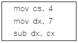
- 1.75
- 3
- 11
- 28
(정답률: 88%)
83. 다음 지문이 설명하고 있는 것은?
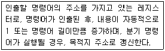
- 기억장치 버퍼 레지스터
- 누산기
- 프로그램 카운터
- 명령 레지스터
(정답률: 75%)
84. 500가지의 색상을 나타낼 정보를 저장하고자 할 경우, 최소 몇 비트가 필요한가?
- 6비트
- 7비트
- 8비트
- 9비트
(정답률: 86%)
85. 다음 중 기계어로 번역된 프로그램은?
- 목적 프로그램(Object Program)
- 원시 프로그램(Source Program)
- 컴파일러(Compiler)
- 로더(Loader)
(정답률: 80%)
86. 다음 중 2의 보수를 사용하여 "A-B" 연산을 수행하는 것은?
- A+1
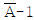
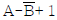
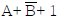
(정답률: 75%)
87. 다음 중 언어번역 프로그램에 속하지 않는 것은?
- Assembler
- Compiler
- Generator
- Supervisor
(정답률: 77%)
88. 다음 중 비동기 인터페이스(Asynchronous Interface)에 대한 설명으로 틀린 것은?
- 컴퓨터와 입출력 장치가 데이터를 주고받을 때 일정한 클록 신호의 속도에 맞추어 약정된 신호에 의해 동기를 맞추는 방식이다.
- 동기를 맞추는 약정된 신호는 시작(Start), 종료(Stop) 비트 신호이다.
- 컴퓨터 내에 있는 입출력 시스템의 전송 속도와 입출력 장치의 속도가 현저하게 다를 때 사용한다.
- 일반적으로 컴퓨터 본체와 주변 장치 간에 직렬 데이터 전송을 하기 위해 사용된다.
(정답률: 70%)
89. OS(Operating System) 기능 중 자원관리에 속하지 않는 것은?
- 기억장치 관리
- 프로세스 관리
- 파일 관리
- 시스템 관리
(정답률: 63%)
90. 산술 결과 값이 오버플로(Overflow)가 일어났을 때 제어의 흐름이 계속되지 않고 고정된 기억위치로 스위치되어 오버플로(Overflow)에 대한 적절한 처리를 하도록 하는 경우를 무엇이라고 하는가?
- 서브루틴
- 분기
- 인터럽트
- 트랩
(정답률: 62%)
91. 무선설비규칙에서 정의한 공중선계의 충족조건이 아닌 것은?
- 선택도가 작을 것
- 공중선의 이득이 높을 것
- 정합은 신호의 반사손실이 최소화되도록 할 것
- 지향성은 복사되는 전력이 목표하는 방향을 벗어나지 아니하도록 안정적일 것
(정답률: 79%)
92. 무선설비는 전원이 정격전압의 얼마 이내의 범위에서 안정적으로 동작할 수 있어야 하는가?
- ± 5[%]
- ±10[%]
- ±15[%]
- ±20[%]
(정답률: 85%)
93. 무선설비 선계변경 및 계약금액 조정관련 감리업무 내용으로 잘못된 것은?
- 감리사는 설계변경 지시내용의 이행가능 여부를 당시의 공정, 자재수급 상황 등을 검토하여 확정하고, 만약 이행이 불가능하다고 판단될 경우에는 그 사유와 근거자료를 첨부하여 시공자에게 보고하여야 한다.
- 발주자가 설계변경 도서를 작성할 수 없을 경우에는 설계변경 개요서만 첨부하여 설계변경지시를 할 수 있다.
- 설계변경 도서작성에 소요되는 비용은 원칙적으로 발주자가 부담하여야 한다.
- 감리사는 설계변경 등으로 인한 계약금액의 조정을 위한 각종서류를 시공자로부터 제출받아 검토한 후 감리업자 대표자에게 보고하여야 한다.
(정답률: 68%)
94. 다음 중 적합인증 대상기자재에 해당되지 않는 것은?
- 디지털선택호출장치의 기기
- 자동음성처리시스템
- 키폰시스템
- 전기가열기
(정답률: 83%)
95. 방송통신기자재 등의 적합인증의 대상, 절차 및 방법 등에 관하여 필요한 세부사항은 누가 고시하는가?
- 관할 우체국장
- 중앙전파관리소장
- 한국방송통신전파진흥원장
- 국립전파연구원장
(정답률: 62%)
96. 중파방송을 행하는 방송국의 개설조건으로 맞는 것은?
- 블랭킷에어리어내의 가구수는 방송구역내 가구수의 0.30[%] 이상일 것
- 블랭킷에어리어내의 가구수는 방송구역내 가구수의 0.35[%] 이하일 것
- 블랭킷에어리어내의 가구수는 방송구역내 가구수의 0.45[%] 이상일 것
- 블랭킷에어리어내의 가구수는 방송구역내 가구수의 0.035[%] 이하일 것
(정답률: 84%)
97. 156[MHz]~174[MHz] 주파수대를 사용하는 선박국 및 생존정의 송신설비의 주파수 허용편차는 백만분의 얼마인가?
- 10
- 30
- 50
- 100
(정답률: 77%)
98. 무선설비 각 공사에 있어서 기술적 공법, 작업방법 등 공사 특별사항을 작성한 시방서를 무엇이라고 하는가?
- 공사시방서
- 표준시방서
- 전문시방서
- 특별시방서
(정답률: 83%)
99. 다음 중 고시대상 무선국을 허가한 경우 고시하여야 할 사항이 아닌 것은?
- 시설자의 성명 또는 명칭
- 허가의 유효기간
- 무선국의 명칭 및 종별과 무선설비의 설치장소
- 주파수, 전파의 형식, 점유주파수대폭 및 공중선전력
(정답률: 65%)
100. 무선방위측정장치 보호구역에 전파를 방해할 우려가 있는 건축물 등을 건설하려는 경우 승인을 얻어야 할 건조물 또는 공작물에 해당하지 않는 것은?
- 무선방위측정장치의 설치장소로부터 500미터 이내의 지역에 매설하는 수도관
- 무선방위측정장치의 설치장소로부터 500미터 이내의 지역에 매설하는 가스관
- 무선방위측정장치의 설치장소로부터 1킬로미터 이내의 지역에 건설하고자 하는 송신공중선
- 무선방위측정장치의 설치장소로부터 1킬로미터 이내의 지역에 매설하는 통신용 케이블
(정답률: 68%)